<!DOCTYPE html>


<html lang="zh-Hans">
  

    <head>
      <meta charset="utf-8" />
        
      <meta name="description" content="Technical output and problem solving record" />
      
      <meta
        name="viewport"
        content="width=device-width, initial-scale=1, maximum-scale=1"
      />
      <title>06云原生--若依项目上云 |  Tunan`s Blog</title>
  <meta name="generator" content="hexo-theme-ayer">
      
      <link rel="shortcut icon" href="/favicon.ico" />
       
<link rel="stylesheet" href="/dist/main.css">

      <link
        rel="stylesheet"
        href="https://cdn.jsdelivr.net/gh/Shen-Yu/cdn/css/remixicon.min.css"
      />
      
<link rel="stylesheet" href="/css/custom.css">
 
      <script src="https://cdn.jsdelivr.net/npm/pace-js@1.0.2/pace.min.js"></script>
       
 

      <link
        rel="stylesheet"
        href="https://cdn.jsdelivr.net/npm/@sweetalert2/theme-bulma@5.0.1/bulma.min.css"
      />
      <script src="https://cdn.jsdelivr.net/npm/sweetalert2@11.0.19/dist/sweetalert2.min.js"></script>

      <!-- mermaid -->
      
      <style>
        .swal2-styled.swal2-confirm {
          font-size: 1.6rem;
        }
      </style>
    </head>
  </html>
</html>


<body>
  <div id="app">
    
      
    <main class="content on">
      <section class="outer">
  <article
  id="post-06云原生-若依项目上云"
  class="article article-type-post"
  itemscope
  itemprop="blogPost"
  data-scroll-reveal
>
  <div class="article-inner">
    
    <header class="article-header">
       
<h1 class="article-title sea-center" style="border-left:0" itemprop="name">
  06云原生--若依项目上云
</h1>
 

      
    </header>
     
    <div class="article-meta">
      <a href="/2022/03/29/06%E4%BA%91%E5%8E%9F%E7%94%9F-%E8%8B%A5%E4%BE%9D%E9%A1%B9%E7%9B%AE%E4%B8%8A%E4%BA%91/" class="article-date">
  <time datetime="2022-03-29T02:16:10.000Z" itemprop="datePublished">2022-03-29</time>
</a> 
  <div class="article-category">
    <a class="article-category-link" href="/categories/%E4%BA%91%E5%8E%9F%E7%94%9F/">云原生</a>
  </div>
  
<div class="word_count">
    <span class="post-time">
        <span class="post-meta-item-icon">
            <i class="ri-quill-pen-line"></i>
            <span class="post-meta-item-text"> Word count:</span>
            <span class="post-count">1.2k</span>
        </span>
    </span>

    <span class="post-time">
        &nbsp; | &nbsp;
        <span class="post-meta-item-icon">
            <i class="ri-book-open-line"></i>
            <span class="post-meta-item-text"> Reading time≈</span>
            <span class="post-count">5 min</span>
        </span>
    </span>
</div>
 
    </div>
      
    <div class="tocbot"></div>


  
    <div class="article-entry" itemprop="articleBody">
       
  <h1 id="RuoYi-Cloud部署实战"><a href="#RuoYi-Cloud部署实战" class="headerlink" title="RuoYi-Cloud部署实战"></a>RuoYi-Cloud部署实战</h1><h2 id="项目简介"><a href="#项目简介" class="headerlink" title="项目简介"></a>项目简介</h2><h3 id="项目地址"><a href="#项目地址" class="headerlink" title="项目地址"></a>项目地址</h3><p><a target="_blank" rel="noopener" href="https://gitee.com/y_project/RuoYi-Cloud">https://gitee.com/y_project/RuoYi-Cloud</a></p>
 <span id="more"></span>

<h3 id="项目简介-1"><a href="#项目简介-1" class="headerlink" title="项目简介"></a>项目简介</h3><p>若依是一套全部开源的快速开发平台，毫无保留给个人及企业免费使用。</p>
<ul>
<li>采用前后端分离的模式，微服务版本前端(基于 <a target="_blank" rel="noopener" href="https://gitee.com/y_project/RuoYi-Vue">RuoYi-Vue</a>)。</li>
<li>后端采用Spring Boot、Spring Cloud &amp; Alibaba。</li>
<li>注册中心、配置中心选型Nacos，权限认证使用Redis。</li>
<li>流量控制框架选型Sentinel，分布式事务选型Seata。</li>
<li>提供了技术栈（<a href="https://gitee.com/link?target=https://v3.cn.vuejs.org">Vue3</a> <a href="https://gitee.com/link?target=https://element-plus.org/zh-CN">Element Plus</a> <a href="https://gitee.com/link?target=https://cn.vitejs.dev">Vite</a>）版本<a href="https://gitee.com/link?target=https://github.com/yangzongzhuan/RuoYi-Cloud-Vue3">RuoYi-Cloud-Vue3</a>，保持同步更新。</li>
</ul>
<h3 id="系统模块"><a href="#系统模块" class="headerlink" title="系统模块"></a>系统模块</h3><pre><code>com.ruoyi     
├── ruoyi-ui              // 前端框架 [80]
├── ruoyi-gateway         // 网关模块 [8080]
├── ruoyi-auth            // 认证中心 [9200]
├── ruoyi-api             // 接口模块
│       └── ruoyi-api-system                          // 系统接口
├── ruoyi-common          // 通用模块
│       └── ruoyi-common-core                         // 核心模块
│       └── ruoyi-common-datascope                    // 权限范围
│       └── ruoyi-common-datasource                   // 多数据源
│       └── ruoyi-common-log                          // 日志记录
│       └── ruoyi-common-redis                        // 缓存服务
│       └── ruoyi-common-security                     // 安全模块
│       └── ruoyi-common-swagger                      // 系统接口
├── ruoyi-modules         // 业务模块
│       └── ruoyi-system                              // 系统模块 [9201]
│       └── ruoyi-gen                                 // 代码生成 [9202]
│       └── ruoyi-job                                 // 定时任务 [9203]
│       └── ruoyi-file                                // 文件服务 [9300]
├── ruoyi-visual          // 图形化管理模块
│       └── ruoyi-visual-monitor                      // 监控中心 [9100]
├──pom.xml                // 公共依赖
</code></pre>
<h3 id="架构图"><a href="#架构图" class="headerlink" title="架构图"></a>架构图</h3><p>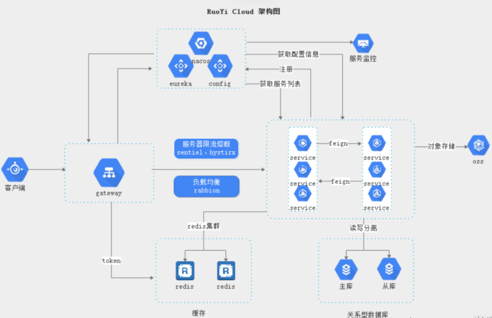</p>
<h2 id="KubeSphere部署RuoYi"><a href="#KubeSphere部署RuoYi" class="headerlink" title="KubeSphere部署RuoYi"></a>KubeSphere部署RuoYi</h2><h3 id="1、部署条件"><a href="#1、部署条件" class="headerlink" title="1、部署条件"></a>1、部署条件</h3><p>中间件：有状态，数据导入</p>
<p>微服务：无状态，制作镜像</p>
<p>网址：访问地址</p>
<p>配置：生产配置分离，URL</p>
<h3 id="2、把本地MySQL数据导入到云上MySQL"><a href="#2、把本地MySQL数据导入到云上MySQL" class="headerlink" title="2、把本地MySQL数据导入到云上MySQL"></a>2、把本地MySQL数据导入到云上MySQL</h3><p>包含ry-cloud、ry-config、ry-seata三个库</p>
<p>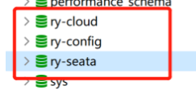</p>
<p>在本地数据库软件远程连接服务器的mysql主机进行数据访问测试</p>
<h3 id="3、部署nacos"><a href="#3、部署nacos" class="headerlink" title="3、部署nacos"></a>3、部署nacos</h3><h4 id="3-1-创建服务"><a href="#3-1-创建服务" class="headerlink" title="3.1 创建服务"></a>3.1 创建服务</h4><p>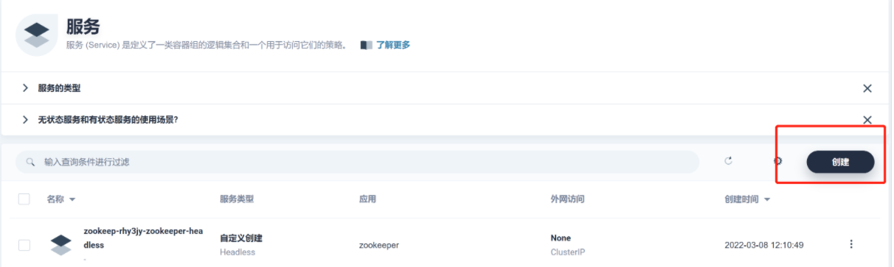</p>
<p>选择有状态服务</p>
<p>nacos名称是his-nacos，版本写v1，描述信息写nacos注册中心与配置中心</p>
<h4 id="3-2-添加容器"><a href="#3-2-添加容器" class="headerlink" title="3.2 添加容器"></a>3.2 添加容器</h4><p>选择好镜像，分配资源以及设置访问策略，</p>
<p>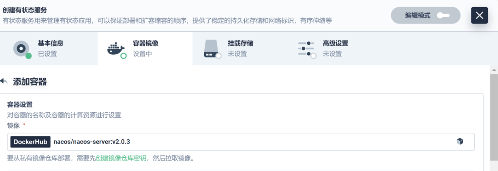</p>
<p>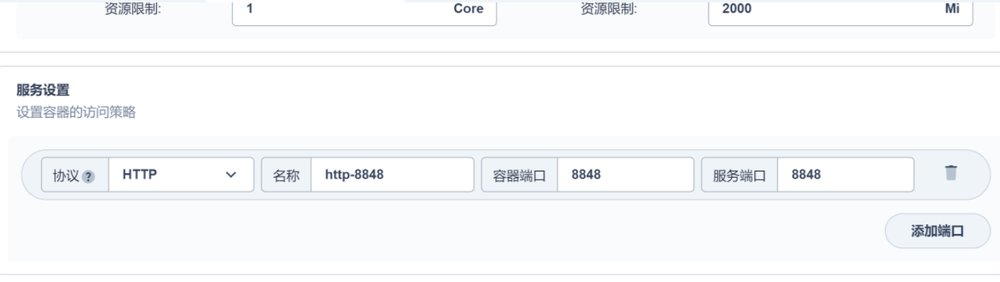</p>
<h4 id="3-3-配置nacos配置文件"><a href="#3-3-配置nacos配置文件" class="headerlink" title="3.3 配置nacos配置文件"></a>3.3 配置nacos配置文件</h4><p>在配置中心的配置中，创建配置</p>
<p>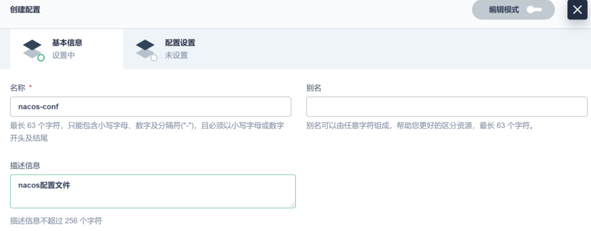</p>
<p>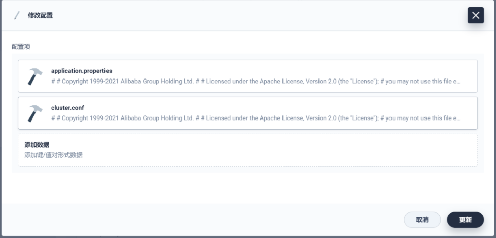</p>
<h4 id="3-4-添加挂载存储"><a href="#3-4-添加挂载存储" class="headerlink" title="3.4 添加挂载存储"></a>3.4 添加挂载存储</h4><p>挂载配置文件以 子路径的形式挂载</p>
<p>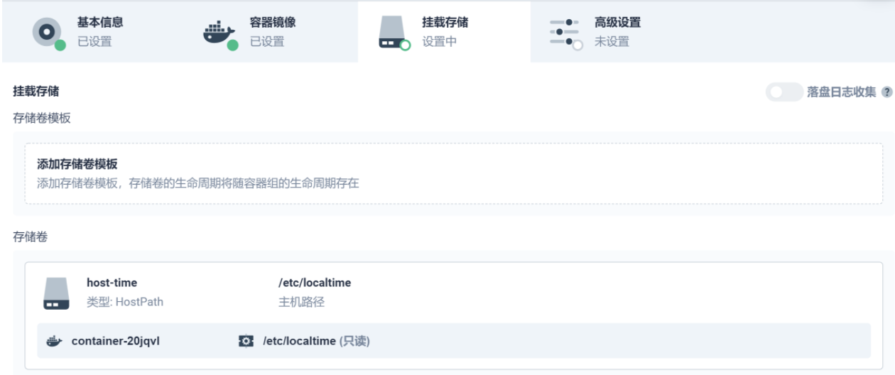</p>
<h4 id="3-5-完成检查创建进度"><a href="#3-5-完成检查创建进度" class="headerlink" title="3.5 完成检查创建进度"></a>3.5 完成检查创建进度</h4><p>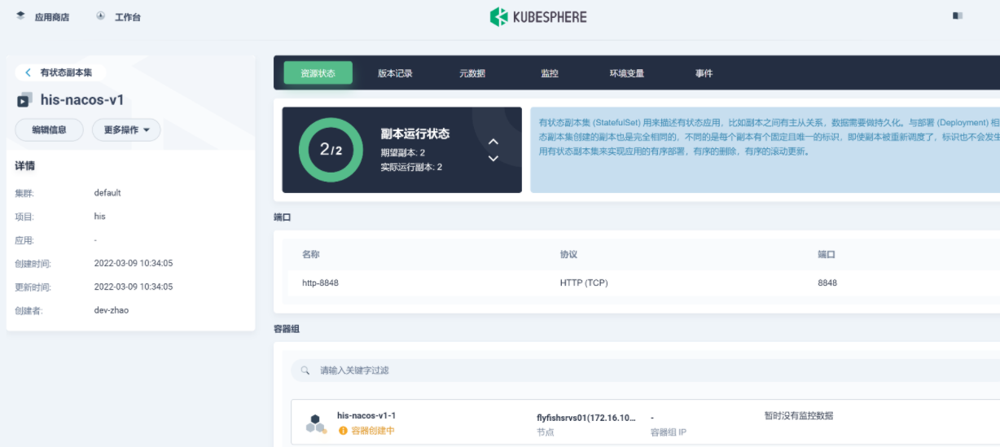</p>
<h4 id="3-6-nacos集群外部访问"><a href="#3-6-nacos集群外部访问" class="headerlink" title="3.6 nacos集群外部访问"></a>3.6 nacos集群外部访问</h4><p>通过指定工作负载进行自定义创建</p>
<p>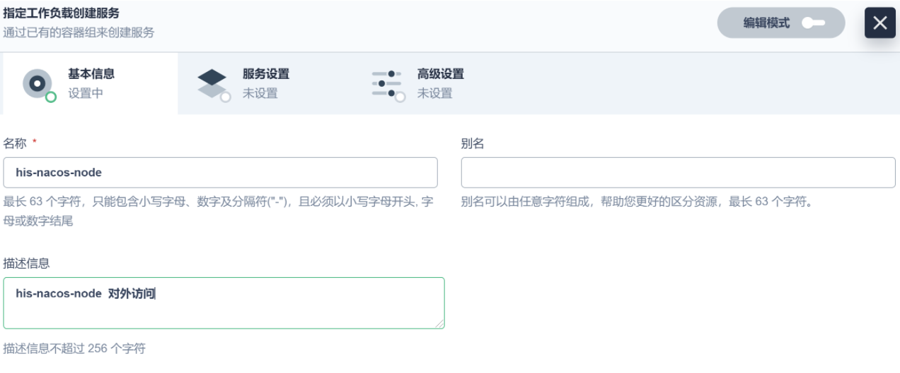</p>
<p>选择上述 创建的有状态副本集his-nacos-v1</p>
<p>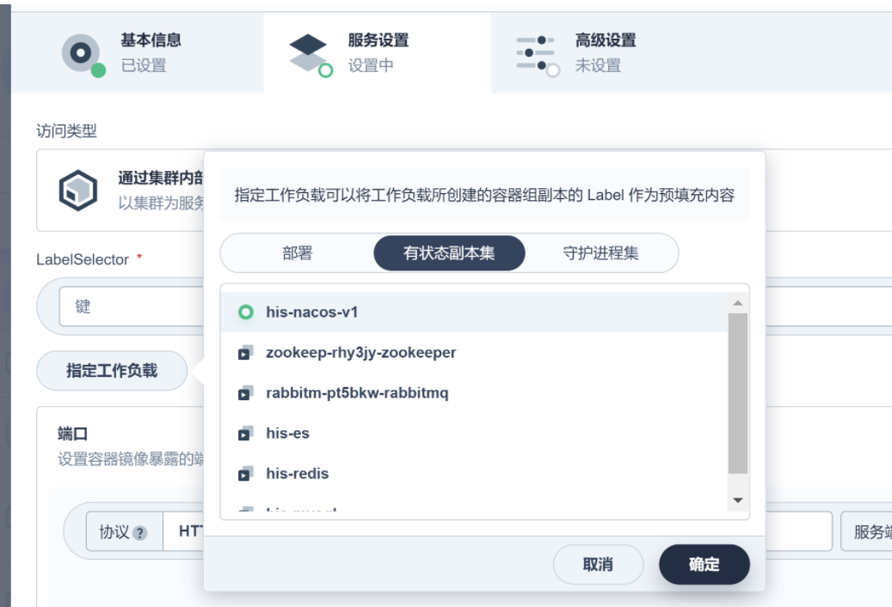</p>
<p>访问方式</p>
<p>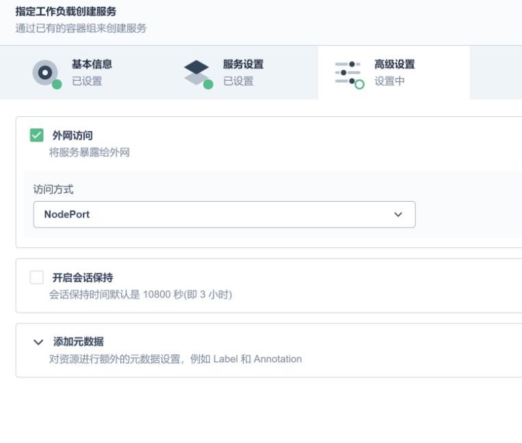</p>
<p>查看创建</p>
<p>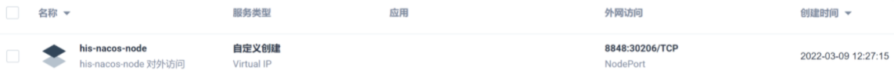</p>
<h4 id="3-7-修改nacos-连接的数据库"><a href="#3-7-修改nacos-连接的数据库" class="headerlink" title="3.7 修改nacos 连接的数据库"></a>3.7 修改nacos 连接的数据库</h4><p>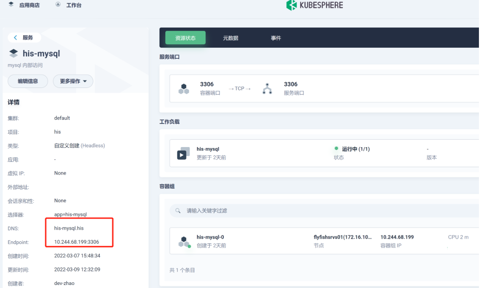</p>
<p>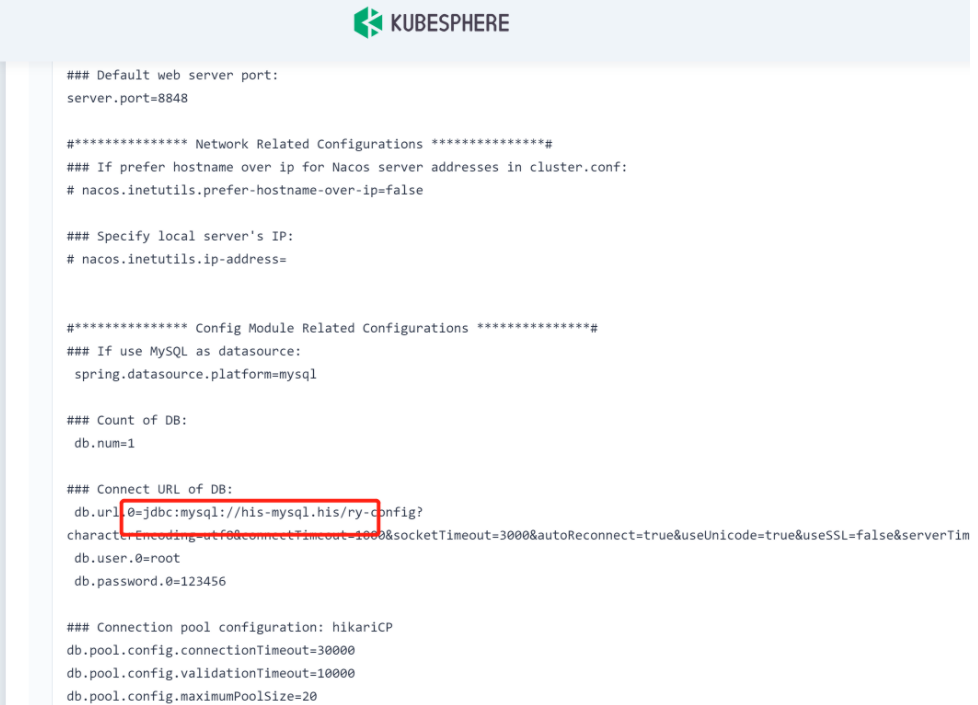</p>
<p>重新部署nacos pod  可以降副本 在增加pod</p>
<p>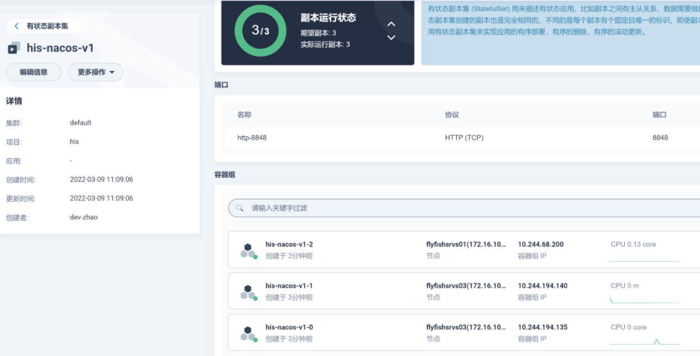</p>
<pre><code>nacos web 打开：

http://172.16.10.11:30206/nacos

用户名、密钥

nacos/nacos
</code></pre>
<h3 id="4、部署微服务层"><a href="#4、部署微服务层" class="headerlink" title="4、部署微服务层"></a>4、部署微服务层</h3><p>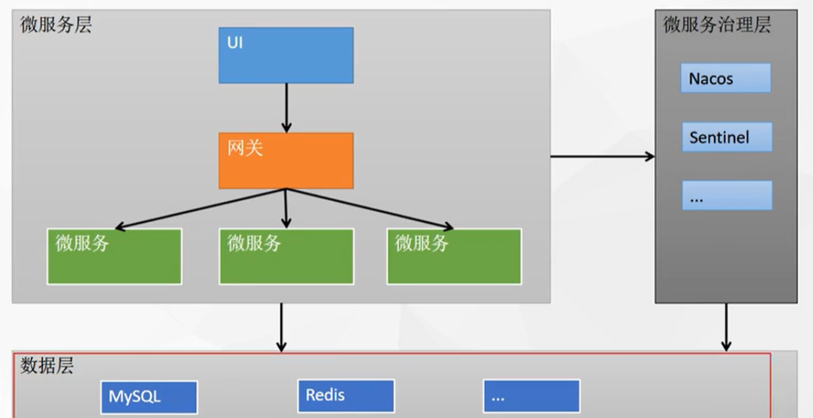</p>
<h4 id="4-1-Dockerfile"><a href="#4-1-Dockerfile" class="headerlink" title="4.1 Dockerfile"></a>4.1 Dockerfile</h4><pre><code class="dockerfile">FROM openjdk:8-jdk
LABEL maintainer=leifengyang


#docker run -e PARAMS=&quot;--server.port 9090&quot;
ENV PARAMS=&quot;--server.port=8080 --spring.profiles.active=prod --spring.cloud.nacos.discovery.server-addr=his-nacos.his:8848 --spring.cloud.nacos.config.server-addr=his-nacos.his:8848 --spring.cloud.nacos.config.namespace=prod --spring.cloud.nacos.config.file-extension=yml&quot;
RUN /bin/cp /usr/share/zoneinfo/Asia/Shanghai /etc/localtime &amp;&amp; echo &#39;Asia/Shanghai&#39; &gt;/etc/timezone

COPY target/*.jar /app.jar
EXPOSE 8080

#
ENTRYPOINT [&quot;/bin/sh&quot;,&quot;-c&quot;,&quot;java -Dfile.encoding=utf8 -Djava.security.egd=file:/dev/./urandom -jar app.jar $&#123;PARAMS&#125;&quot;]
</code></pre>
<p>规则：</p>
<p>1、容器默认以8080端口启动</p>
<p>2、时间为CST</p>
<p>3、环境变量 PARAMS 可以动态指定配置文件中任意的值</p>
<p>4、nacos集群内地址为 <code>his-nacos.his:8848</code></p>
<p>5、微服务默认启动加载 nacos中  <code>服务名-激活的环境.yml</code> 文件，所以线上的配置可以全部写在nacos中。</p>
<h4 id="4-2-打包镜像"><a href="#4-2-打包镜像" class="headerlink" title="4.2 打包镜像"></a>4.2 打包镜像</h4><p>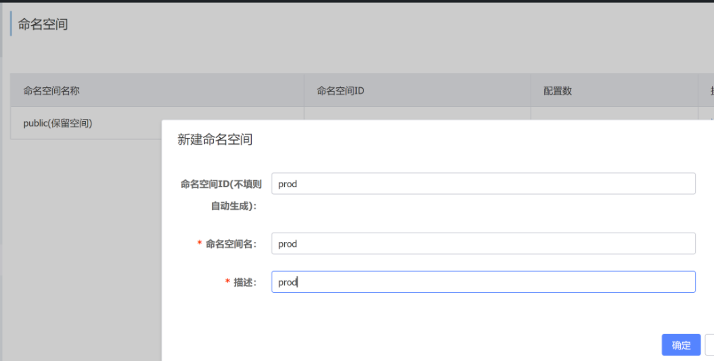</p>
<p>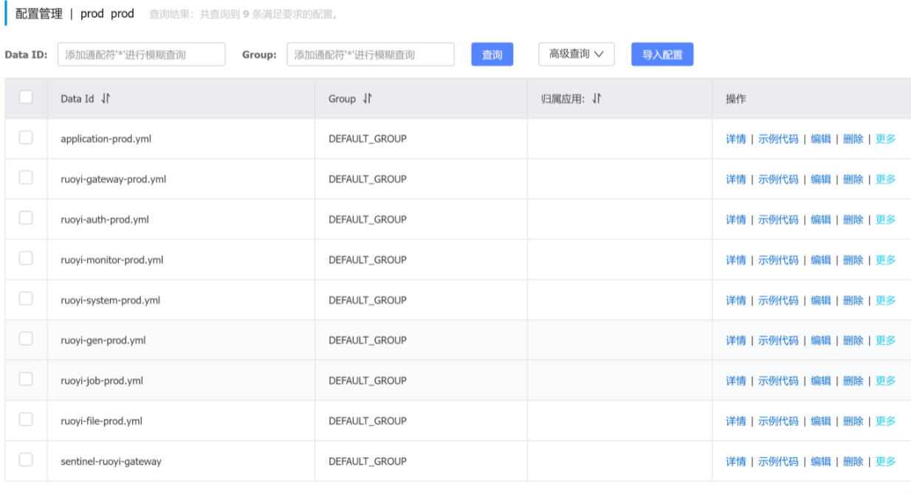</p>
<h4 id="4-3-登录阿里云的镜像仓库"><a href="#4-3-登录阿里云的镜像仓库" class="headerlink" title="4.3 登录阿里云的镜像仓库"></a>4.3 登录阿里云的镜像仓库</h4><ul>
<li><p>开通阿里云“容器镜像服务（个人版）”</p>
</li>
<li><ul>
<li>创建一个名称空间（lfy_ruoyi）。（存储镜像）</li>
<li>推送镜像到阿里云镜像仓库</li>
</ul>
</li>
</ul>
<pre><code class="bash">$ docker login --username=forsum**** registry.cn-hangzhou.aliyuncs.com

#把本地镜像，改名，成符合阿里云名字规范的镜像。
$ docker tag [ImageId] registry.cn-hangzhou.aliyuncs.com/lfy_ruoyi/镜像名:[镜像版本号]
## docker tag 461955fe1e57 registry.cn-hangzhou.aliyuncs.com/lfy_ruoyi/ruoyi-visual-monitor:v1

$ docker push registry.cn-hangzhou.aliyuncs.com/lfy_ruoyi/镜像名:[镜像版本号]
## docker push registry.cn-hangzhou.aliyuncs.com/lfy_ruoyi/ruoyi-visual-monitor:v1
</code></pre>
<p>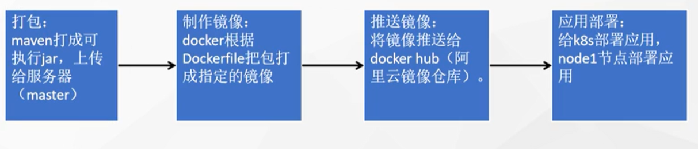</p>
<h4 id="4-4-RuoYi所有镜像"><a href="#4-4-RuoYi所有镜像" class="headerlink" title="4.4 RuoYi所有镜像"></a>4.4 RuoYi所有镜像</h4><pre><code class="bash">docker pull registry.cn-hangzhou.aliyuncs.com/lfy_ruoyi/ruoyi-auth:v2
docker pull registry.cn-hangzhou.aliyuncs.com/lfy_ruoyi/ruoyi-file:v2
docker pull registry.cn-hangzhou.aliyuncs.com/lfy_ruoyi/ruoyi-gateway:v2
docker pull registry.cn-hangzhou.aliyuncs.com/lfy_ruoyi/ruoyi-job:v2
docker pull registry.cn-hangzhou.aliyuncs.com/lfy_ruoyi/ruoyi-system:v2
docker pull registry.cn-hangzhou.aliyuncs.com/lfy_ruoyi/ruoyi-visual-monitor:v2
docker pull registry.cn-hangzhou.aliyuncs.com/lfy_ruoyi/ruoyi-ui:v2
</code></pre>
<p>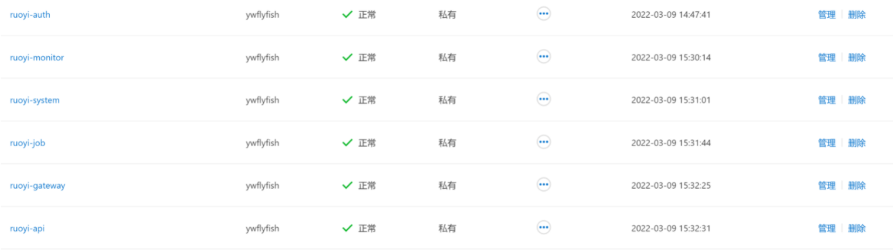</p>
<h4 id="4-5-使用KubeSphere部署服务"><a href="#4-5-使用KubeSphere部署服务" class="headerlink" title="4.5 使用KubeSphere部署服务"></a>4.5 使用KubeSphere部署服务</h4><p>将个人仓库注入到 kubesphere 当中</p>
<p>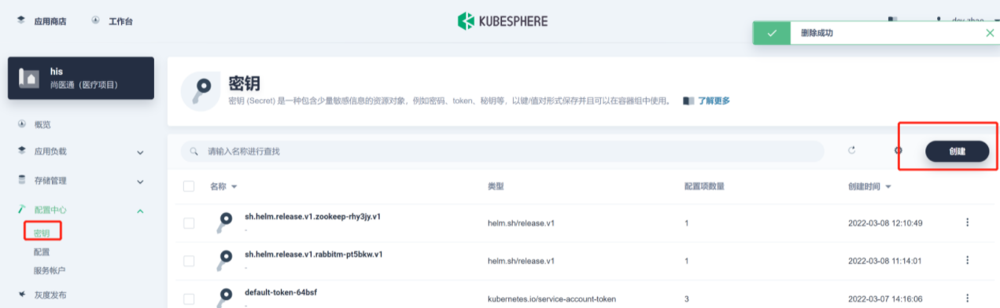</p>
<p>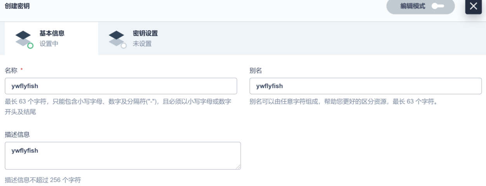</p>
<p>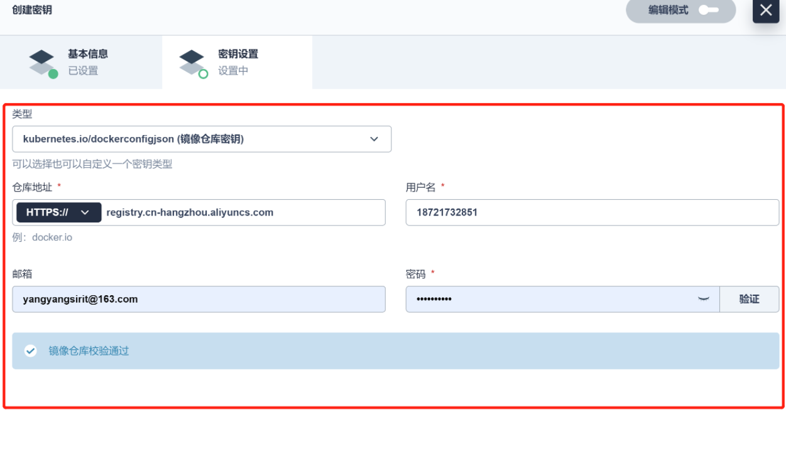</p>
<h4 id="后端微服务部署示例"><a href="#后端微服务部署示例" class="headerlink" title="后端微服务部署示例"></a>后端微服务部署示例</h4><p>部署ruoyi-cloud 的ruoyi-monitor 服务</p>
<p>创建无状态服务</p>
<p>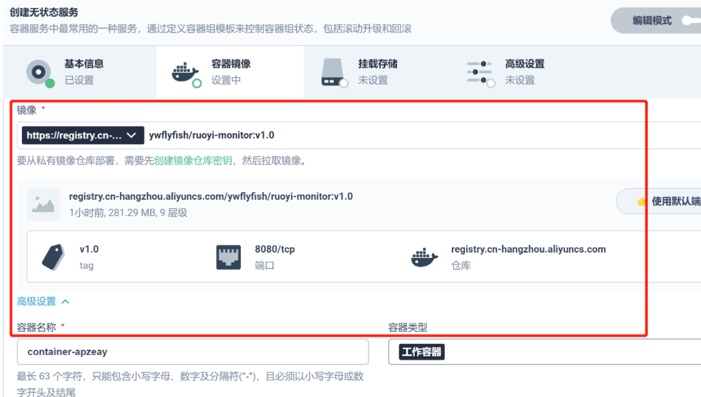</p>
<p>启动报错给nacos 的模式改为MODE:standalone</p>
<p>查看日志，ruoyi-monitor 启动成功</p>
<p>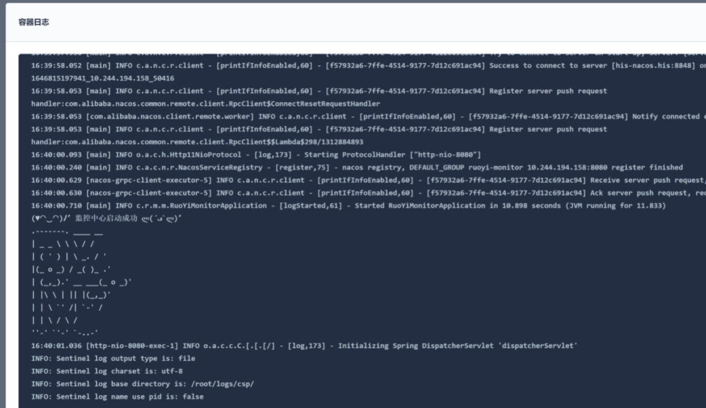</p>
<p>参考上面的部署ruoyi-cloud 的其它服务</p>
<h3 id="部署ruoyi-ui"><a href="#部署ruoyi-ui" class="headerlink" title="部署ruoyi-ui"></a>部署ruoyi-ui</h3><p>修改前端的网关地址</p>
<p>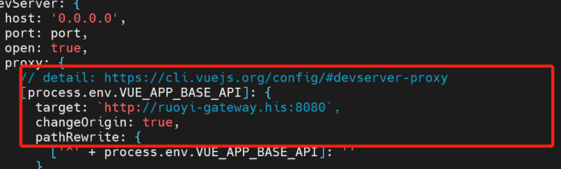</p>
<p>打包：</p>
<pre><code>cd /usr/local/RuoYi-Cloud/ruoyi-ui

npm run build:prod 
</code></pre>
<p>打包配置文件镜像</p>
<pre><code>docker build -t ruoyi-ui:v1.0 -f dockerfile .

docker tag ruoyi-ui:v1.0 registry.cn-hangzhou.aliyuncs.com/ywflyfish/ruoyi-ui:v1.0

docker push registry.cn-hangzhou.aliyuncs.com/ywflyfish/ruoyi-ui:v1.0
</code></pre>
<p>创建无状态服务。将ruoyi-ui发布</p>
<p>在最后高级设置中注意要将ruoyi-ui发布到外网</p>
<p>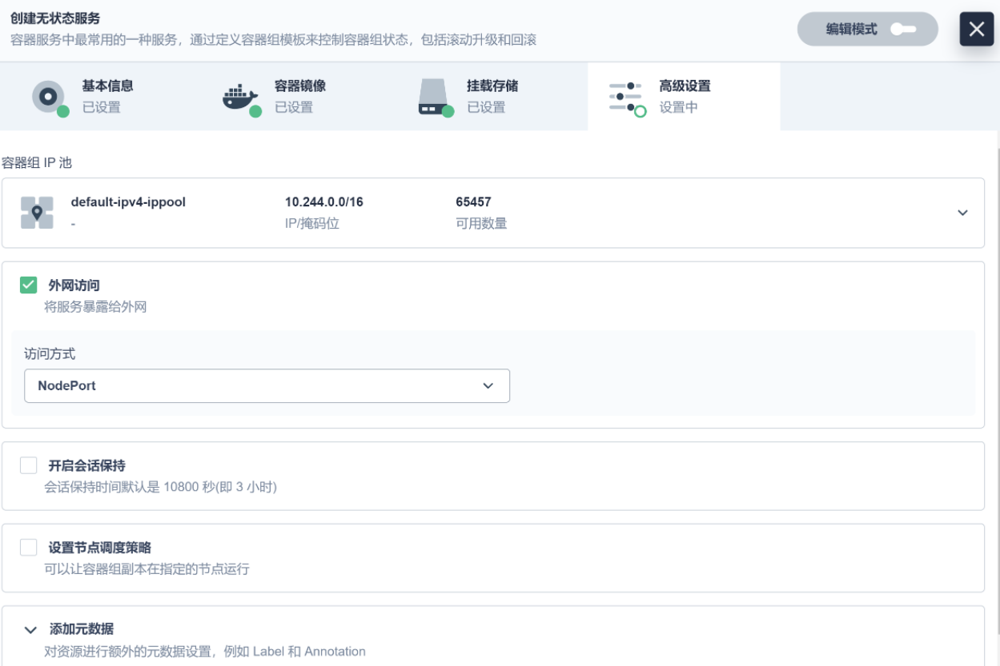</p>
<p>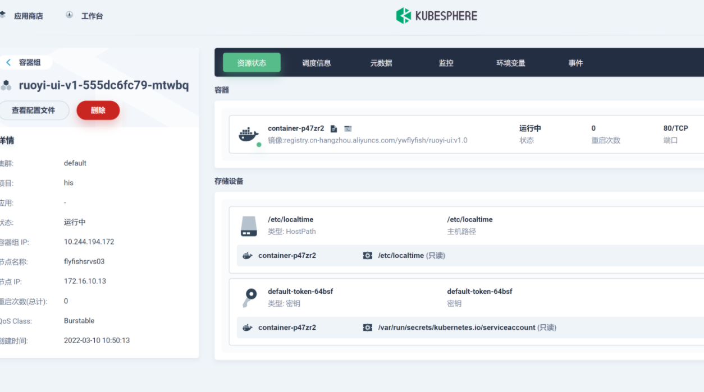</p>
<p>页面测试</p>
<p>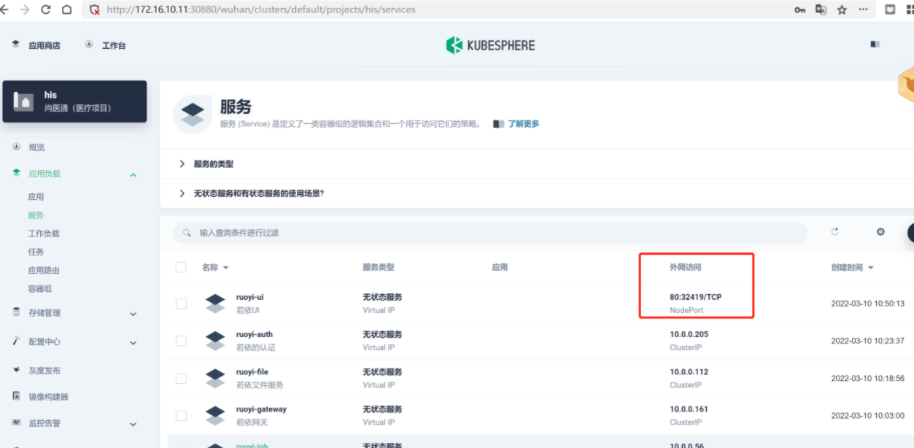</p>
<p>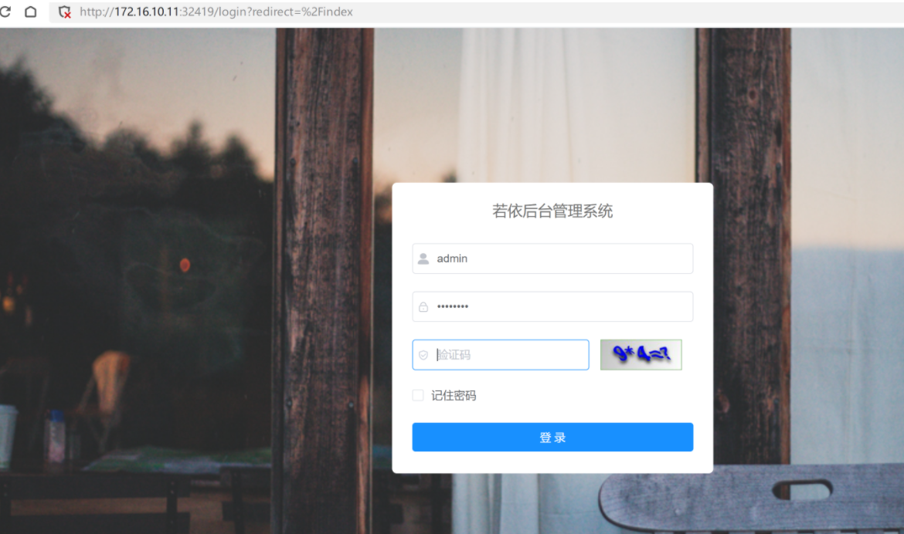</p>
<p>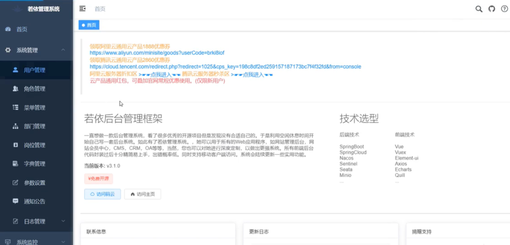</p>
 
      <!-- reward -->
      
    </div>
    

    <!-- copyright -->
    
    <div class="declare">
      <ul class="post-copyright">
        <li>
          <i class="ri-copyright-line"></i>
          <strong>Copyright： </strong>
          
          Copyright is owned by the author. For commercial reprints, please contact the author for authorization. For non-commercial reprints, please indicate the source.
          
        </li>
      </ul>
    </div>
    
    <footer class="article-footer">
       
<div class="share-btn">
      <span class="share-sns share-outer">
        <i class="ri-share-forward-line"></i>
        分享
      </span>
      <div class="share-wrap">
        <i class="arrow"></i>
        <div class="share-icons">
          
          <a class="weibo share-sns" href="javascript:;" data-type="weibo">
            <i class="ri-weibo-fill"></i>
          </a>
          <a class="weixin share-sns wxFab" href="javascript:;" data-type="weixin">
            <i class="ri-wechat-fill"></i>
          </a>
          <a class="qq share-sns" href="javascript:;" data-type="qq">
            <i class="ri-qq-fill"></i>
          </a>
          <a class="douban share-sns" href="javascript:;" data-type="douban">
            <i class="ri-douban-line"></i>
          </a>
          <!-- <a class="qzone share-sns" href="javascript:;" data-type="qzone">
            <i class="icon icon-qzone"></i>
          </a> -->
          
          <a class="facebook share-sns" href="javascript:;" data-type="facebook">
            <i class="ri-facebook-circle-fill"></i>
          </a>
          <a class="twitter share-sns" href="javascript:;" data-type="twitter">
            <i class="ri-twitter-fill"></i>
          </a>
          <a class="google share-sns" href="javascript:;" data-type="google">
            <i class="ri-google-fill"></i>
          </a>
        </div>
      </div>
</div>

<div class="wx-share-modal">
    <a class="modal-close" href="javascript:;"><i class="ri-close-circle-line"></i></a>
    <p>扫一扫，分享到微信</p>
    <div class="wx-qrcode">
      
    </div>
</div>

<div id="share-mask"></div>  
  <ul class="article-tag-list" itemprop="keywords"><li class="article-tag-list-item"><a class="article-tag-list-link" href="/tags/ruoyi/" rel="tag">ruoyi</a></li></ul>

    </footer>
  </div>

   
  <nav class="article-nav">
    
    
      <a href="/2022/03/29/05%E4%BA%91%E5%8E%9F%E7%94%9F-KubeSphere%E5%AE%9E%E6%88%98/" class="article-nav-link">
        <strong class="article-nav-caption">下一篇</strong>
        <div class="article-nav-title">05云原生--KubeSphere实战</div>
      </a>
    
  </nav>

   
<!-- valine评论 -->
<div id="vcomments-box">
  <div id="vcomments"></div>
</div>
<script src="//cdn1.lncld.net/static/js/3.0.4/av-min.js"></script>
<script src="https://cdn.jsdelivr.net/npm/valine@1.4.14/dist/Valine.min.js"></script>
<script>
  new Valine({
    el: "#vcomments",
    app_id: "",
    app_key: "",
    path: window.location.pathname,
    avatar: "monsterid",
    placeholder: "给我的文章加点评论吧~",
    recordIP: true,
  });
  const infoEle = document.querySelector("#vcomments .info");
  if (infoEle && infoEle.childNodes && infoEle.childNodes.length > 0) {
    infoEle.childNodes.forEach(function (item) {
      item.parentNode.removeChild(item);
    });
  }
</script>
<style>
  #vcomments-box {
    padding: 5px 30px;
  }

  @media screen and (max-width: 800px) {
    #vcomments-box {
      padding: 5px 0px;
    }
  }

  #vcomments-box #vcomments {
    background-color: #fff;
  }

  .v .vlist .vcard .vh {
    padding-right: 20px;
  }

  .v .vlist .vcard {
    padding-left: 10px;
  }
</style>

 
   
     
</article>

</section>
      <footer class="footer">
  <div class="outer">
    <ul>
      <li>
        Copyrights &copy;
        2018-2022
        <i class="ri-heart-fill heart_icon"></i> Tunan
      </li>
    </ul>
    <ul>
      <li>
        
      </li>
    </ul>
    <ul>
      <li>
        
        
        <span>
  <span><i class="ri-user-3-fill"></i>Visitors:<span id="busuanzi_value_site_uv"></span></span>
  <span class="division">|</span>
  <span><i class="ri-eye-fill"></i>Views:<span id="busuanzi_value_page_pv"></span></span>
</span>
        
      </li>
    </ul>
    <ul>
      
    </ul>
    <ul>
      
    </ul>
    <ul>
      <li>
        <!-- cnzz统计 -->
        
        <script type="text/javascript" src='https://s9.cnzz.com/z_stat.php?id=1278069914&amp;web_id=1278069914'></script>
        
      </li>
    </ul>
  </div>
</footer>    
    </main>
    <div class="float_btns">
      <div class="totop" id="totop">
  <i class="ri-arrow-up-line"></i>
</div>

<div class="todark" id="todark">
  <i class="ri-moon-line"></i>
</div>

    </div>
    <aside class="sidebar on">
      <button class="navbar-toggle"></button>
<nav class="navbar">
  
  <div class="logo">
    <a href="/"></a>
  </div>
  
  <ul class="nav nav-main">
    
    <li class="nav-item">
      <a class="nav-item-link" href="/">主页</a>
    </li>
    
    <li class="nav-item">
      <a class="nav-item-link" href="/archives">归档</a>
    </li>
    
    <li class="nav-item">
      <a class="nav-item-link" href="/categories">分类</a>
    </li>
    
    <li class="nav-item">
      <a class="nav-item-link" href="/tags">标签</a>
    </li>
    
    <li class="nav-item">
      <a class="nav-item-link" href="/tags/share">分享</a>
    </li>
    
    <li class="nav-item">
      <a class="nav-item-link" target="_blank" rel="noopener" href="https://blog.csdn.net/North_City_">CSDN</a>
    </li>
    
  </ul>
</nav>
<nav class="navbar navbar-bottom">
  <ul class="nav">
    <li class="nav-item">
      
      <a class="nav-item-link nav-item-search"  title="Search">
        <i class="ri-search-line"></i>
      </a>
      
      
      <a class="nav-item-link" target="_blank" href="/atom.xml" title="RSS Feed">
        <i class="ri-rss-line"></i>
      </a>
      
    </li>
  </ul>
</nav>
<div class="search-form-wrap">
  <div class="local-search local-search-plugin">
  <input type="search" id="local-search-input" class="local-search-input" placeholder="Search...">
  <div id="local-search-result" class="local-search-result"></div>
</div>
</div>
    </aside>
    <div id="mask"></div>

<!-- #reward -->
<div id="reward">
  <span class="close"><i class="ri-close-line"></i></span>
  <p class="reward-p"><i class="ri-cup-line"></i>请我喝杯咖啡吧~</p>
  <div class="reward-box">
    
    <div class="reward-item">
      
      <span class="reward-type">支付宝</span>
    </div>
    
    
    <div class="reward-item">
      
      <span class="reward-type">微信</span>
    </div>
    
  </div>
</div>
    
<script src="/js/jquery-3.6.0.min.js"></script>
 
<script src="/js/lazyload.min.js"></script>

<!-- Tocbot -->
 
<script src="/js/tocbot.min.js"></script>

<script>
  tocbot.init({
    tocSelector: ".tocbot",
    contentSelector: ".article-entry",
    headingSelector: "h1, h2, h3, h4, h5, h6",
    hasInnerContainers: true,
    scrollSmooth: true,
    scrollContainer: "main",
    positionFixedSelector: ".tocbot",
    positionFixedClass: "is-position-fixed",
    fixedSidebarOffset: "auto",
  });
</script>

<script src="https://cdn.jsdelivr.net/npm/jquery-modal@0.9.2/jquery.modal.min.js"></script>
<link
  rel="stylesheet"
  href="https://cdn.jsdelivr.net/npm/jquery-modal@0.9.2/jquery.modal.min.css"
/>
<script src="https://cdn.jsdelivr.net/npm/justifiedGallery@3.7.0/dist/js/jquery.justifiedGallery.min.js"></script>

<script src="/dist/main.js"></script>

<!-- ImageViewer -->
 <!-- Root element of PhotoSwipe. Must have class pswp. -->
<div class="pswp" tabindex="-1" role="dialog" aria-hidden="true">

    <!-- Background of PhotoSwipe. 
         It's a separate element as animating opacity is faster than rgba(). -->
    <div class="pswp__bg"></div>

    <!-- Slides wrapper with overflow:hidden. -->
    <div class="pswp__scroll-wrap">

        <!-- Container that holds slides. 
            PhotoSwipe keeps only 3 of them in the DOM to save memory.
            Don't modify these 3 pswp__item elements, data is added later on. -->
        <div class="pswp__container">
            <div class="pswp__item"></div>
            <div class="pswp__item"></div>
            <div class="pswp__item"></div>
        </div>

        <!-- Default (PhotoSwipeUI_Default) interface on top of sliding area. Can be changed. -->
        <div class="pswp__ui pswp__ui--hidden">

            <div class="pswp__top-bar">

                <!--  Controls are self-explanatory. Order can be changed. -->

                <div class="pswp__counter"></div>

                <button class="pswp__button pswp__button--close" title="Close (Esc)"></button>

                <button class="pswp__button pswp__button--share" style="display:none" title="Share"></button>

                <button class="pswp__button pswp__button--fs" title="Toggle fullscreen"></button>

                <button class="pswp__button pswp__button--zoom" title="Zoom in/out"></button>

                <!-- Preloader demo http://codepen.io/dimsemenov/pen/yyBWoR -->
                <!-- element will get class pswp__preloader--active when preloader is running -->
                <div class="pswp__preloader">
                    <div class="pswp__preloader__icn">
                        <div class="pswp__preloader__cut">
                            <div class="pswp__preloader__donut"></div>
                        </div>
                    </div>
                </div>
            </div>

            <div class="pswp__share-modal pswp__share-modal--hidden pswp__single-tap">
                <div class="pswp__share-tooltip"></div>
            </div>

            <button class="pswp__button pswp__button--arrow--left" title="Previous (arrow left)">
            </button>

            <button class="pswp__button pswp__button--arrow--right" title="Next (arrow right)">
            </button>

            <div class="pswp__caption">
                <div class="pswp__caption__center"></div>
            </div>

        </div>

    </div>

</div>

<link rel="stylesheet" href="https://cdn.jsdelivr.net/npm/photoswipe@4.1.3/dist/photoswipe.min.css">
<link rel="stylesheet" href="https://cdn.jsdelivr.net/npm/photoswipe@4.1.3/dist/default-skin/default-skin.min.css">
<script src="https://cdn.jsdelivr.net/npm/photoswipe@4.1.3/dist/photoswipe.min.js"></script>
<script src="https://cdn.jsdelivr.net/npm/photoswipe@4.1.3/dist/photoswipe-ui-default.min.js"></script>

<script>
    function viewer_init() {
        let pswpElement = document.querySelectorAll('.pswp')[0];
        let $imgArr = document.querySelectorAll(('.article-entry img:not(.reward-img)'))

        $imgArr.forEach(($em, i) => {
            $em.onclick = () => {
                // slider展开状态
                // todo: 这样不好，后面改成状态
                if (document.querySelector('.left-col.show')) return
                let items = []
                $imgArr.forEach(($em2, i2) => {
                    let img = $em2.getAttribute('data-idx', i2)
                    let src = $em2.getAttribute('data-target') || $em2.getAttribute('src')
                    let title = $em2.getAttribute('alt')
                    // 获得原图尺寸
                    const image = new Image()
                    image.src = src
                    items.push({
                        src: src,
                        w: image.width || $em2.width,
                        h: image.height || $em2.height,
                        title: title
                    })
                })
                var gallery = new PhotoSwipe(pswpElement, PhotoSwipeUI_Default, items, {
                    index: parseInt(i)
                });
                gallery.init()
            }
        })
    }
    viewer_init()
</script> 
<!-- MathJax -->

<!-- Katex -->

<!-- busuanzi  -->
 
<script src="/js/busuanzi-2.3.pure.min.js"></script>
 
<!-- ClickLove -->

<!-- ClickBoom1 -->

<!-- ClickBoom2 -->

<!-- CodeCopy -->
 
<link rel="stylesheet" href="/css/clipboard.css">
 <script src="https://cdn.jsdelivr.net/npm/clipboard@2/dist/clipboard.min.js"></script>
<script>
  function wait(callback, seconds) {
    var timelag = null;
    timelag = window.setTimeout(callback, seconds);
  }
  !function (e, t, a) {
    var initCopyCode = function(){
      var copyHtml = '';
      copyHtml += '<button class="btn-copy" data-clipboard-snippet="">';
      copyHtml += '<i class="ri-file-copy-2-line"></i><span>COPY</span>';
      copyHtml += '</button>';
      $(".highlight .code pre").before(copyHtml);
      $(".article pre code").before(copyHtml);
      var clipboard = new ClipboardJS('.btn-copy', {
        target: function(trigger) {
          return trigger.nextElementSibling;
        }
      });
      clipboard.on('success', function(e) {
        let $btn = $(e.trigger);
        $btn.addClass('copied');
        let $icon = $($btn.find('i'));
        $icon.removeClass('ri-file-copy-2-line');
        $icon.addClass('ri-checkbox-circle-line');
        let $span = $($btn.find('span'));
        $span[0].innerText = 'COPIED';
        
        wait(function () { // 等待两秒钟后恢复
          $icon.removeClass('ri-checkbox-circle-line');
          $icon.addClass('ri-file-copy-2-line');
          $span[0].innerText = 'COPY';
        }, 2000);
      });
      clipboard.on('error', function(e) {
        e.clearSelection();
        let $btn = $(e.trigger);
        $btn.addClass('copy-failed');
        let $icon = $($btn.find('i'));
        $icon.removeClass('ri-file-copy-2-line');
        $icon.addClass('ri-time-line');
        let $span = $($btn.find('span'));
        $span[0].innerText = 'COPY FAILED';
        
        wait(function () { // 等待两秒钟后恢复
          $icon.removeClass('ri-time-line');
          $icon.addClass('ri-file-copy-2-line');
          $span[0].innerText = 'COPY';
        }, 2000);
      });
    }
    initCopyCode();
  }(window, document);
</script>
 
<!-- CanvasBackground -->

<script>
  if (window.mermaid) {
    mermaid.initialize({ theme: "forest" });
  }
</script>


    
    

  </div>
</body>

</html>